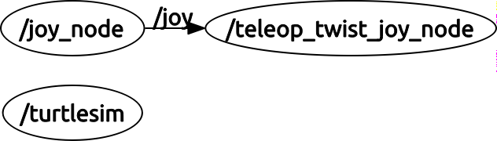

Topic Remapping¶
Prerequisites¶
For this tutorial we will be using the joy package. Acquire a joystick and ensure the joy package is installed:
sudo apt install ros-kinetic-joy
Also complete the following tutorial about the use of the joy package: Configuring a Linux Joystick
Connecting Joy and Turtlesim¶
Joy outputs messages of type sensor_msgs/Joy. Turtlesim requires input messages of type geometry_msgs/Twist. (A good exercise would be to confirm this from the command terminal). In order for Joy to send messages to turtlesim we need to be able to convert messages of type sensor_msgs/Joy to geometry_msgs/Twist.
Let's look a look more in depth at the differences between the two message types. Try the command:
rosmsg show sensor_msgs/Joy
std_msgs/Header header
uint32 seq
time stamp
string frame_id
float32[] axes
int32[] buttons
```
Now try:
``` bash
rosmsg show geometry_msgs/Twist
geometry_msgs/Vector3 linear
float64 x
float64 y
float64 z
geometry_msgs/Vector3 angular
float64 x
float64 y
float64 z
As you can see the contents (as well as type) of these two messages are fundamentally different, hence we need a node which will convert the one to the other.
The node we will use to convert sensor_msgs/Joy messages to geometry_msgs/Twist messages is called teleop_twist_joy
Navigate to the src directory of your workspace:
cd ~/[your_workspace]/src
git clone https://github.com/ros-teleop/teleop_twist_joy.git
and build the package.
cd ~/[your_workspace]
catkin_make
```
Note: If you only wish to build teleop_twist_joy use `catkin_make --pkg teleop_twist_joy`
Now that our package is built let's see if we can command our turtle using a joystick. In different terminals run:
``` bash
roscore
rosrun turtlesim turtlesim_node
rosrun joy joy_node
rosrun teleop_twist_joy teleop_node
If you get the error message: Error: Package 'teleop_twist_joy' not found, check your source path.
To do this you're going to open the .rosrc file with vim. In the terminal run:
vrosrc
This is a short version of vim ~/.rosrc and opens vim so you can change the .rosrc file.
Now look for the line of code under ROS_WORKSPACE that starts with source. change it to look like:
source ~/[your_workspace]/devel/setup.bash
To close Vim, hit escape a few times then type: :wq the colon let's it know you're typing a command and wq saves and quits the file.
Now run the following in the terminal:
rospack profile
This command goes through the directory and indexes it. (That means it will find the teleop_twist_joy package so you can use it.)
Now check to make sure that your work space is being source. In the terminal run:
printenv |grep ROS
printenv prints environment variables.
| is sometimes called "pipe." It "pipes" the first command into the second.
As you should know from the linux tutorial, the grep command searches a file and prints out what you tell it to search for.
The whole line basically says "search the printed environment variables for ROS."
Look for ROS_PACKAGE_PATH= and it should be the path you set e.g. catkin_ws/src:[some more stuff after]
Once all that is done, try running the rosrun teleop_twist_joy teleop_node command again.
Now try using the joystick to move the turtle around. You'll notice that it doesn't work. Let's investigate using rqt_graph
rqt_graph
You should see something similar to this:

As seen above, all three nodes are running, but /teleop_twist_joy_node is not communicating with /turtlesim. Let's look at what topic /teleop_twist_joy_node is publishing on and /turtlesim is subscribing to.
Let's start with teleop_twist_joy_node:
rosnode info teleop_twist_joy_node
You should see:
--------------------------------------------------------------------------------
Node [/teleop_twist_joy_node]
Publications:
* /rosout [rosgraph_msgs/Log]
* /cmd_vel [geometry_msgs/Twist]
Subscriptions:
* /joy [sensor_msgs/Joy]
Services:
* /teleop_twist_joy_node/get_loggers
* /teleop_twist_joy_node/set_logger_level
contacting node http://Hulk:39127/ ...
Pid: 30767
Connections:
* topic: /rosout
* to: /rosout
* direction: outbound
* transport: TCPROS
* topic: /joy
* to: /joy_node (http://Hulk:59300/)
* direction: inbound
* transport: TCPROS
```
It appears 'teleop_twist_joy_node' is publishing on the 'cmd_vel' topic. Let's see what turtlesim is subscribing to:
``` bash
rosnode info turtlesim
--------------------------------------------------------------------------------
Node [/turtlesim]
Publications:
* /turtle1/color_sensor [turtlesim/Color]
* /rosout [rosgraph_msgs/Log]
* /turtle1/pose [turtlesim/Pose]
Subscriptions:
* /turtle1/cmd_vel [unknown type]
Services:
* /turtle1/teleport_absolute
* /turtlesim/get_loggers
* /turtlesim/set_logger_level
* /reset
* /spawn
* /clear
* /turtle1/set_pen
* /turtle1/teleport_relative
* /kill
contacting node http://Hulk:59750/ ...
Pid: 24728
Connections:
* topic: /rosout
* to: /rosout
* direction: outbound
* transport: TCPROS
turtlesim is also subscribing to the cmd_vel topic, but within the turtle1 namespace. Let's close turtlesim and fix this by remapping the input of turtlesim to be 'cmd_vel' instead of 'turtle1/cmd_vel'
rosrun turtlesim turtlesim_node turtle1/cmd_vel:=cmd_vel
Now refresh your rqt_graph. It should now look like:
Now if you hold down the activation button (for Xbox 360 controllers it's the A button) and move the joystick you should be able to command your turtle!